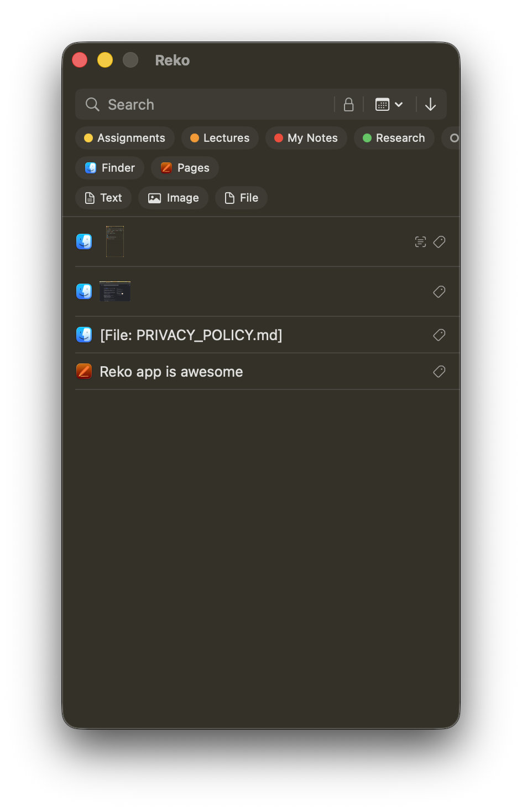
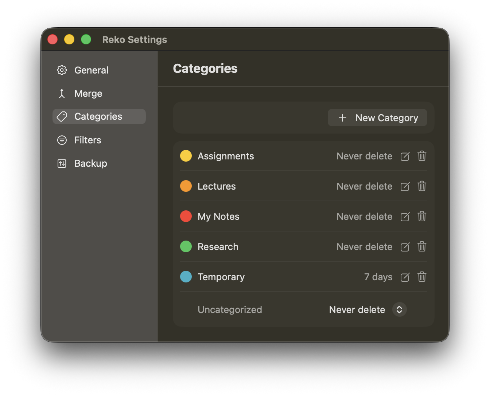
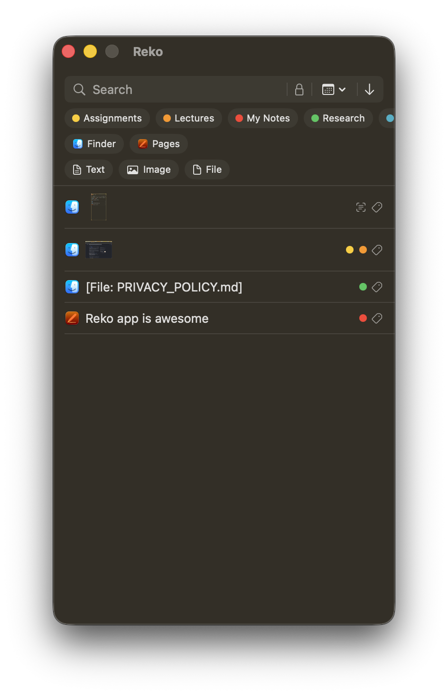
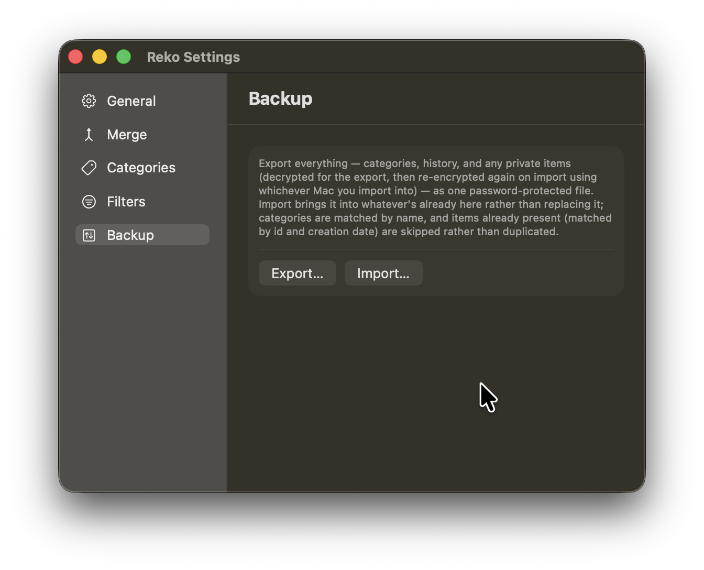

You copy things all day — text, screenshots, files, whole paragraphs from three different tabs. Reko remembers every one of them, so you never have to go find where it went.
You copy something, then copy something else, and the first thing is gone — that's how the Mac clipboard has always worked. Reko sits quietly in your menu bar and keeps a running history of everything you copy, exactly as you copied it: plain text, rich formatting, images, files, whatever.
Copy ten things in a row and all ten are still there when you need them.

Press your shortcut while you're typing in any app, and your clipboard history pops up right there — no switching windows, no hunting through a menu bar icon. Click the item you want and it's pasted.
Click away, or hit Escape, and it's gone like it was never there.
Choose per-paste — clean, plain text with no formatting fighting whatever you're pasting into, or exact, formatting and all. Auto-paste the moment you click, no extra ⌘V needed.
Copied five things for five fields? Sequential paste steps through your selection in order, one shortcut press per field — no re-opening the window each time.
Group items into categories that make sense to you — work, code snippets, addresses, whatever fits how you actually use your clipboard. Each category can keep its history for a different length of time, so a quick scratch category clears itself out while the one you rely on daily sticks around.


Not everything you copy is meant to sit around in plain view — a password, a private note, something sensitive. Mark an item Private and it's encrypted on disk and hidden behind Face ID, Touch ID, or your Mac password.
Unlock once and everything marked private stays visible while you're actively working, then locks itself back down.
A history is only useful if you can actually find what you want in it. Search across everything you've copied, or narrow it down by category, which app it came from, what kind of content it is, when you copied it — even filter down to just your private items.
Select several items you've copied and merge them into one — either as a single new clipboard item ready to paste, or as a real, properly formatted .docx you can open straight in Pages or Word. Bold, italic, underline, strikethrough, fonts, sizes, colors — all the formatting from each original piece carries over.
Copy an image with text in it — a screenshot of an error message, a photo of a whiteboard — and Reko pulls the actual text out on-device, ready to search or paste, without ever sending the image anywhere.
If that image contains a barcode or QR code, Reko detects and decodes it automatically too — no separate scanner app needed for something already sitting in your clipboard history.
Export your entire clipboard history to a single encrypted file, protected by a password only you know, and bring it back on another Mac — or the same one, after a fresh install — whenever you want.
Nothing leaves your machine unless you explicitly export it.
